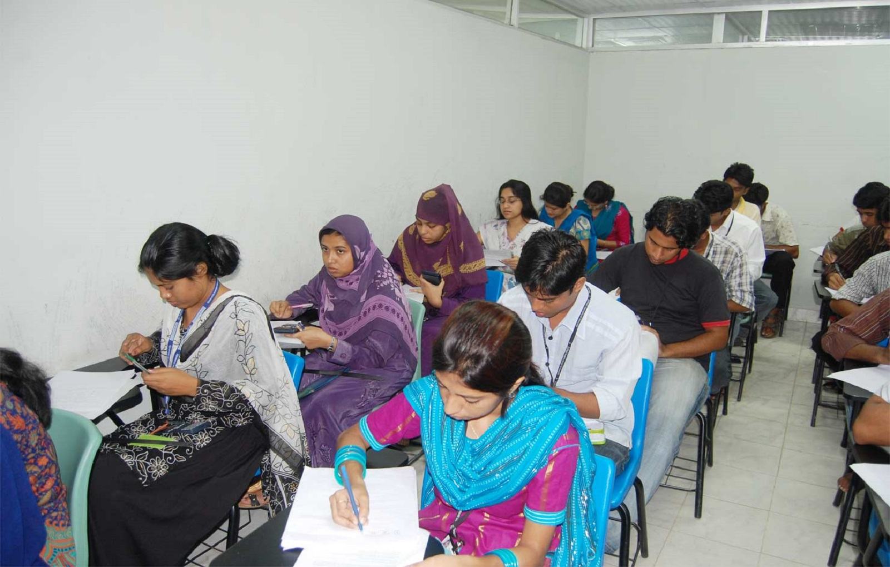

Make sitting arrangement For Examination here!!
I am here to help you to make seat plan
for examination. I will do it in a short time for you.
You have to give me required information like,
Rooms capacity details and Course & Student
details. Then, I'll make the report for you according to your given information. You can also
Edit your given information if you did anything wrong while giving input.
